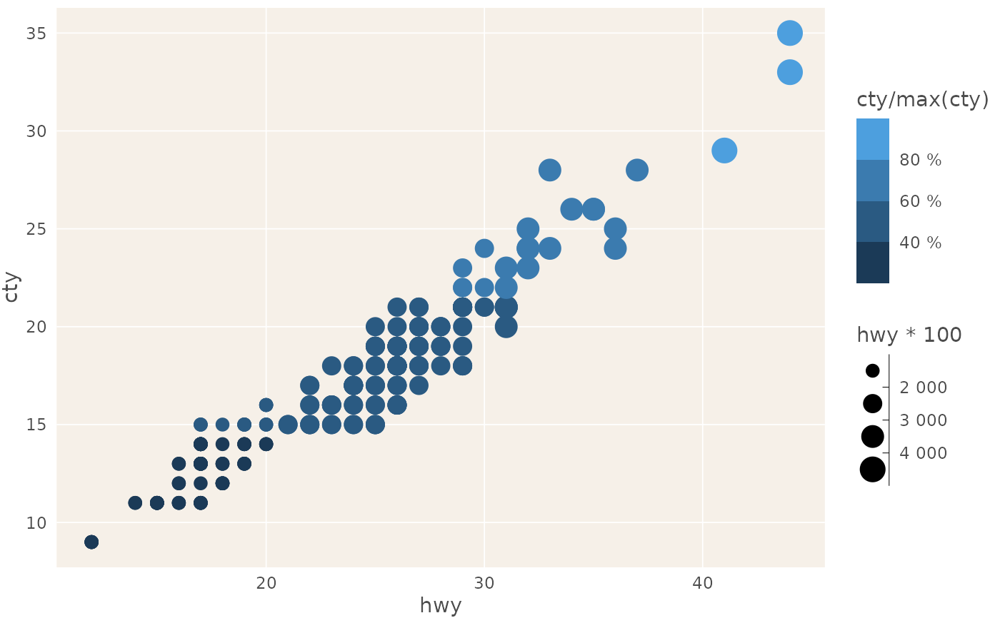

label_percent_cz() returns a formatter that outputs percent labels with a " %" suffix and a decimal comma.
label_number_cz() uses space as thousand separator and decimal comma.
Use these when you need to format labels on something other than X and Y axes
Usage
label_percent_cz(
accuracy = NULL,
scale = 100,
prefix = "",
suffix = " %",
big.mark = " ",
decimal.mark = ",",
trim = TRUE,
...
)
label_number_cz(
accuracy = NULL,
scale = 1,
prefix = "",
suffix = "",
big.mark = " ",
decimal.mark = ",",
trim = TRUE,
...
)Arguments
- accuracy
A number to round to. Use (e.g.)
0.01to show 2 decimal places of precision. IfNULL, the default, uses a heuristic that should ensure breaks have the minimum number of digits needed to show the difference between adjacent values.Applied to rescaled data.
- scale
A scaling factor:
xwill be multiplied byscalebefore formatting. This is useful if the underlying data is very small or very large.- prefix
Additional text to display before the number. The suffix is applied to absolute value before
style_positiveandstyle_negativeare processed so thatprefix = "$"will yield (e.g.)-$1and($1).- suffix
Additional text to display after the number.
- big.mark
Character used between every 3 digits to separate thousands. The default (
NULL) retrieves the setting from the number options.- decimal.mark
The character to be used to indicate the numeric decimal point. The default (
NULL) retrieves the setting from the number options.- trim
Logical, if
FALSE, values are right-justified to a common width (seebase::format()).- ...
Other arguments passed on to
base::format().
Examples
library(reschola)
library(ggplot2)
ggplot(mpg, aes(hwy, cty)) +
geom_point(aes(colour = cty / max(cty), size = hwy * 100)) +
theme_schola(family = "sans", title_family = "sans", gridlines = "scatter") +
scale_color_binned(labels = label_percent_cz()) +
scale_size_binned(labels = label_number_cz())
